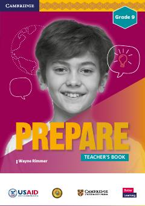

EG9-sinf ingliz tili o'qituvchilari uchun metodik qo'llanma va darslarni rejalashtirish bo'yicha tavsiyalar.
Ushbu kitob O'zbekiston umumta'lim maktablarining 9-sinf ingliz tili o'qituvchilari uchun mo'ljallangan metodik qo'llanmadir. U Cambridge University Press tomonidan tayyorlangan bo'lib, o'quvchilarda XXI asr ko'nikmalarini rivojlantirish va darslarni samarali tashkil etish bo'yicha tavsiyalarni o'z ichiga oladi.